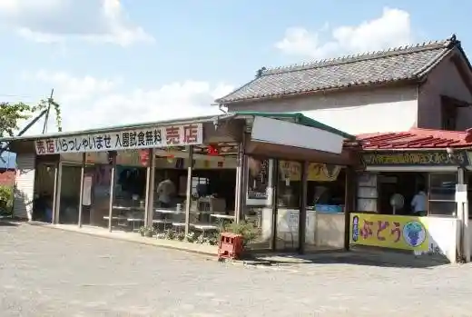
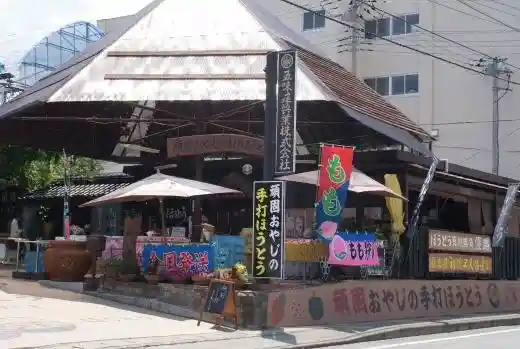
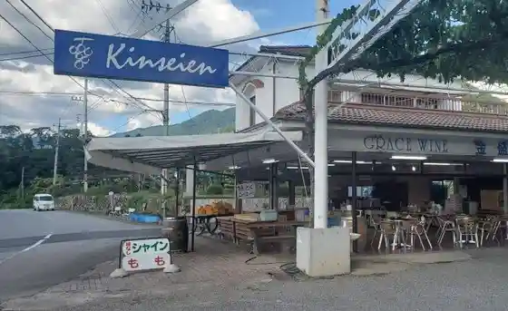
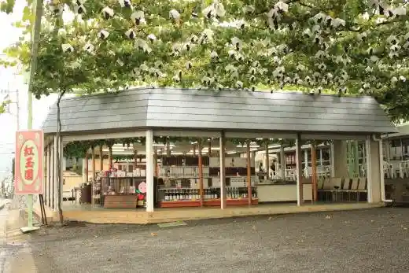

Katsuaki Farm
Koshu, Yamanashi · 0553-33-4990 · Official / source link
Tama Sui En
Koshu, Yamanashi · 0553-44-5200 · Official / source link

Katsunuma Kanko Center Sen Kaen
Koshu, Yamanashi · 0553-44-0632 · Official / source link

Kanamori Sono
Koshu, Yamanashi · 0553-44-0145 · Official / source link

Kogyoku Sono
Koshu, Yamanashi · 0553-44-1368 · Official / source link

Akashiro Sono
Koshu, Yamanashi · 0553-44-2304 · Official / source link
Otaki Yama
Koshu, Yamanashi · 0553-32-2111 · Official / source link
O So Residence
Koshu, Yamanashi · 0553-32-2111 · Official / source link
Yu no Sawatoge
Koshu, Yamanashi · 0553-32-2111 · Official / source link
Keikan Yama (Kurokawa Yama)
Koshu, Yamanashi · 0553-32-2111 · Official / source link
Koganezawa Yama
Koshu, Yamanashi · 0553-32-2111 · Official / source link
Kasatori Yama
Koshu, Yamanashi · 0553-32-2111 · Official / source link
Koshu Takaozan
Koshu, Yamanashi · 0553-32-2111 · Official / source link
Katsunuma Budo Sato Ekimae Plaza / Jinroku Sakura
Koshu, Yamanashi · 0553-32-2111 · Official / source link
Mitsumori Farm
Koshu, Yamanashi · 0553-44-1846 · Official / source link
Daidai Sono
Koshu, Yamanashi · 0553-44-0769 · Official / source link
Sano Farm
Koshu, Yamanashi · 0553-33-3571 · Official / source link
Ho Tama Sono
Koshu, Yamanashi · 0553-44-0585 · Official / source link
Okiya Shiki Sono
Koshu, Yamanashi · 0553-44-0061 · Official / source link
Marusan Farm
Koshu, Yamanashi · 0553-33-4888 · Official / source link
Hosaka Sono
Koshu, Yamanashi · 090-2759-6815 · Official / source link
Katada Sono
Koshu, Yamanashi · 0553-44-0253 · Official / source link
Genjiro Gaku
Koshu, Yamanashi · 0553-32-2111 · Official / source link
Tana Yokotesan
Koshu, Yamanashi · 0553-32-2111 · Official / source link
Daibosatsu Toge
Koshu, Yamanashi · 0553-32-2111 · Official / source link
Odaki Medaki
Koshu, Yamanashi · 0553-32-2111 · Official / source link
Hikawa Keikoku Ryumon Kyo
Koshu, Yamanashi · 0553-32-2111 · Official / source link
Kumano Shrine
Koshu, Yamanashi · 0553-32-2111 · Official / source link
Daibosatsu Mine
Koshu, Yamanashi · 0553-32-2111 · Official / source link
Katsunuma Gure Park
Koshu, Yamanashi · 0553-44-0645 · Official / source link
Jiyu Sono
Koshu, Yamanashi · 0553-44-0675 · Official / source link
Tomo Shuen
Koshu, Yamanashi · 0553-44-0777 · Official / source link
Ichi Ko Sono
Koshu, Yamanashi · 0553-44-0095 · Official / source link
Kunugi Sono
Koshu, Yamanashi · 0553-44-1980 · Official / source link
Narudo Sono
Koshu, Yamanashi · 0553-44-1847 · Official / source link
Sakamoto Sono
Koshu, Yamanashi · 0553-44-0091 · Official / source link
Furutsuhausu Kachi Kaen
Koshu, Yamanashi · 0553-44-5300 · Official / source link
Sakamoto Budo Kari Sono
Koshu, Yamanashi · 0553-44-0133 · Official / source link
Ko Kaen
Koshu, Yamanashi · 0553-44-2371 · Official / source link
Tomitake Sono
Koshu, Yamanashi · 0553-44-0570 · Official / source link
Riso Sono
Koshu, Yamanashi · 0553-44-0242 · Official / source link
Tsuji Toyotama Sono
Koshu, Yamanashi · 0553-44-1014 · Official / source link
Katsunuma Sono
Koshu, Yamanashi · 0553-44-0070 · Official / source link
Misawa Sono
Koshu, Yamanashi · 0553-44-1731 · Official / source link
Ko Hisashi Sono
Koshu, Yamanashi · 0553-44-0002 · Official / source link
Shin Tama Sono
Koshu, Yamanashi · 0553-44-2204 · Official / source link
Mikado Sono
Koshu, Yamanashi · 0553-44-0490 · Official / source link
Seiho Sono
Koshu, Yamanashi · 0553-44-0515 · Official / source link
Yama Ka Sono
Koshu, Yamanashi · 0553-44-1596 · Official / source link
Miharashi no Sen Kaen
Koshu, Yamanashi · 0553-44-1825 · Official / source link
Akasaka Sono
Koshu, Yamanashi · 0553-44-0525 · Official / source link
Oto Ya Uchida Sono
Koshu, Yamanashi · 0553-33-2936 · Official / source link
Sakura Marutomo Farm
Koshu, Yamanashi · 080-3003-1961 · Official / source link
Shukuzawa Furutsu Farm
Koshu, Yamanashi · 0553-39-8581 · Official / source link
Kai Ko Sono
Koshu, Yamanashi · 0553-44-0262 · Official / source link
Otama Sakurambo Kari Furu Ru Sono
Koshu, Yamanashi · 0553-33-3876 · Official / source link
Wakao Orchard
Koshu, Yamanashi · 0553-44-0160 · Official / source link
Kirari Sono
Koshu, Yamanashi · 0553-44-5310 · Official / source link
Kanko Budo Sono Ko Kashiwa Sono
Koshu, Yamanashi · 0553-44-0128 · Official / source link
Uchida Furutsu Farm
Koshu, Yamanashi · 0553-44-5533 · Official / source link
Piinekkuochado
Koshu, Yamanashi · 0553-44-1455 · Official / source link
Tomo Chan Sono
Koshu, Yamanashi · 0553-33-9928 · Official / source link
Katsunuma Daiichi Budo Sono
Koshu, Yamanashi · 0553-44-0419 · Official / source link
Gurepu Garden Anzen Farm
Koshu, Yamanashi · 0553-44-3465 · Official / source link
Hikari Murasaki Sono
Koshu, Yamanashi · 0553-44-0310 · Official / source link
Megumi Sachi Sono
Koshu, Yamanashi · 0553-44-1017 · Official / source link
Shato Katsunuma
Koshu, Yamanashi · 0553-44-0073 · Official / source link
Asunaro Sono
Koshu, Yamanashi · 0553-44-1448 · Official / source link
Hakusan Sono
Koshu, Yamanashi · 0553-33-3859 · Official / source link
Fukuju Sono
Koshu, Yamanashi · 0553-44-0438 · Official / source link
Katsunuma Entei
Koshu, Yamanashi · 0553-32-2111 · Official / source link
Katsunuma Tonneruwainkavu
Koshu, Yamanashi · 0553-32-2111 · Official / source link
Keitoku In
Koshu, Yamanashi · 0553-32-2111 · Official / source link
Ko Gaku Tera
Koshu, Yamanashi · 0553-33-2090 · Official / source link
JR Kai Yamatoeki Shuhen Cherry Blossoms
Koshu, Yamanashi · 0553-32-2111 · Official / source link
Tama Miya Zazen Kusa Park
Koshu, Yamanashi · 0553-32-2111 · Official / source link
San Kubo Highlands
Koshu, Yamanashi · 0553-32-2111 · Official / source link
Oiran Fuchi Shuhen no Autumn Leaves
Koshu, Yamanashi · 0553-32-2111 · Official / source link
Jojitsu Kawa Toge Shuhen
Koshu, Yamanashi · 0553-32-2111 · Official / source link
Hyaku Ka En
Koshu, Yamanashi · 0553-44-0483 · Official / source link
Budo Kobo Waingurasu Kan
Koshu, Yamanashi · 0553-20-4681 · Official / source link
Budo no Kan Sono
Koshu, Yamanashi · 0553-44-0198 · Official / source link
Koshu Katsunuma Budo no Oka
Koshu, Yamanashi · 0553-44-2111 · Official / source link
Hoko Tera
Koshu, Yamanashi · 0553-32-3340 · Official / source link
Sugata Ten Shrine / Kozakura Kawaodoshi Yoroi
Koshu, Yamanashi · 0553-32-2111 · Official / source link
Ushi Oku Miharashi no Oka
Koshu, Yamanashi · 0553-32-2111 · Official / source link
Enzan Togenkyo
Koshu, Yamanashi · 0553-32-2111 · Official / source link
Dai Zen Tera
Koshu, Yamanashi · 0553-44-0027 · Official / source link
Shingen Kan
Koshu, Yamanashi · 0553-33-3555 · Official / source link
Kyuko Noe House (Kanzo Residence)
Koshu, Yamanashi · 0553-33-5910 · Official / source link
Kyu Tanaka Ginko Museum
Koshu, Yamanashi · 0553-44-3755 · Official / source link
Koshu Kindai Sangyo Isan Miya Hikari Sono
Koshu, Yamanashi · 0553-32-5076 · Official / source link
Katsunuma Shi Yakatato
Koshu, Yamanashi · 0553-32-5076 · Official / source link
Budo no Kokubun Ka Kan
Koshu, Yamanashi · 0553-44-3312 · Official / source link
Dainichi Kage Tonneru Promenade
Koshu, Yamanashi · 0553-32-2111 · Official / source link
Habu Teien Tabi Nikki Katsunuma Garden
Koshu, Yamanashi · 0553-44-3715 · Official / source link
Fujikureruwainarii
Koshu, Yamanashi · 0553-44-3181 · Official / source link
Roadside Station Kai Yamato
Koshu, Yamanashi · 0553-48-2571 · Official / source link
Enzan Fureai no Mori General Park
Koshu, Yamanashi · 0553-32-5072 · Official / source link
Tenmoku Yama Sei Kumo Tera
Koshu, Yamanashi · 0553-48-2797 · Official / source link
Kentoku Yama Erin Tera
Koshu, Yamanashi · 0553-33-3011 · Official / source link
Ji Kumo Tera no Itozakura
Koshu, Yamanashi · 0553-33-9039 · Official / source link
Hikawa Keikoku Reja Center
Koshu, Yamanashi · 0553-48-2455 · Official / source link
Hosaka Orchard
Koshu, Yamanashi · 0553-33-2637 · Official / source link
Okuyama Ka Hisashi Sono
Koshu, Yamanashi · 0553-33-5287 · Official / source link
Amemiya Furutsu Farm
Koshu, Yamanashi · 0553-33-3316 · Official / source link
Shimamura Farm
Koshu, Yamanashi · 0553-33-2241 · Official / source link
Higuchi Momozono
Koshu, Yamanashi · 0553-33-4909 · Official / source link
Furutsu Garden Hosaka
Koshu, Yamanashi · 0553-33-3395 · Official / source link
Ame Takashi Sono
Koshu, Yamanashi · 0553-33-2955 · Official / source link
Hamaiba Sancho Byupointo
Koshu, Yamanashi · 0554-20-1829 · Official / source link
Sakurambo Ya Miyahara
Koshu, Yamanashi · 090-1557-0660 · Official / source link
Ichi no Setaka Hara Campground
Koshu, Yamanashi · 0553-34-2125 · Official / source link
Katsunuma Budo Sato Ekimae Plaza
Koshu, Yamanashi · 0553-32-2111 · Official / source link
Budobatake
Koshu, Yamanashi · 0553-44-0356 · Official / source link
Kainuma Budo Sono
Koshu, Yamanashi · 0553-44-0332 · Official / source link
Manzuwain Katsunuma Wainarii
Koshu, Yamanashi · 0553-44-2285 · Official / source link
Ryuta Sono
Koshu, Yamanashi · 090-4599-1259 · Official / source link
Koma Sono Vinyado
Koshu, Yamanashi · 0553-33-3058 · Official / source link
Haramo Wain
Koshu, Yamanashi · 0553-44-0121 · Official / source link
Kai Wainarii
Koshu, Yamanashi · 0553-32-2032 · Official / source link
Enzan Yoshu Jozo
Koshu, Yamanashi · 0553-33-2228 · Official / source link
Yamato Budo Sake
Koshu, Yamanashi · 0553-44-0433 · Official / source link
Shatojun
Koshu, Yamanashi · 0553-44-2501 · Official / source link
Shirayuri Jozo (Rorianwain)
Koshu, Yamanashi · 0553-44-3131 · Official / source link
Morita Koshu Wainarii (Shanmoriwain)
Koshu, Yamanashi · 0553-44-2003 · Official / source link
Katsunuma Jozo
Koshu, Yamanashi · 0553-44-0069 · Official / source link
Ki Yama Yoshu Kogyo
Koshu, Yamanashi · 0553-33-3024 · Official / source link
Hishiyama Chuo Jozo Yugengaisha
Koshu, Yamanashi · 0553-44-0356 · Official / source link
Soryu Budo Sake
Koshu, Yamanashi · 0553-44-0026 · Official / source link
Oizumi Budo Sake
Koshu, Yamanashi · 0553-44-2872 · Official / source link
Honjowain (Iwasaki Jozo)
Koshu, Yamanashi · 0553-44-0020 · Official / source link
Asa Ya Budo Sake
Koshu, Yamanashi · 0553-44-1022 · Official / source link
Marusan Budo Sake
Koshu, Yamanashi · 0553-44-0160 · Official / source link
Shato Merushan Katsunuma Wainarii
Koshu, Yamanashi · 0553-44-1011 · Official / source link
Marufuji Budo Sake Kogyo (MARUFUJI WINERY)
Koshu, Yamanashi · 0553-44-0043 · Official / source link
Igadawainarii
Koshu, Yamanashi · 0553-44-2190 · Official / source link
Daiyamondo Shuzo
Koshu, Yamanashi · 0553-44-0129 · Official / source link
Kuramubon Wain
Koshu, Yamanashi · 0553-44-0111 · Official / source link
Okuno Ta Budo Sake Jozo
Koshu, Yamanashi · 0553-33-9988 · Official / source link
Ushi Oku Daiichi Budo Sake
Koshu, Yamanashi · 0553-33-8080 · Official / source link
Shatorezeberuforewainarii Katsunuma Wainarii
Koshu, Yamanashi · 0553-20-4700 · Official / source link
Maruki Budo Sake
Koshu, Yamanashi · 0553-44-1005 · Official / source link
Ichigobatake Nojo
Koshu, Yamanashi · 080-6757-1515 · Official / source link
Anzen Farm 2 Go Mise (Kyu Kawasaki Sono)
Koshu, Yamanashi · 0553-44-0032 · Official / source link
Kazuhisa Sono
Koshu, Yamanashi · 0553-44-0219 · Official / source link
Ho O Sono
Koshu, Yamanashi · 0553-44-0658 · Official / source link
Kanehara Sono
Koshu, Yamanashi · 0553-44-0200 · Official / source link
Yamaichi Sono
Koshu, Yamanashi · 0553-44-1370 · Official / source link
Sasaki Sono
Koshu, Yamanashi · 0553-44-2547 · Official / source link
Den'en
Koshu, Yamanashi · 0553-44-2788 · Official / source link
Ishihara Kanko Budo Sono
Koshu, Yamanashi · 0553-44-0531 · Official / source link
Budo Kari Iwasaki Sono
Koshu, Yamanashi · 0553-44-2571 · Official / source link
JA Furutsu Yamanashi Furutsu Chokubai Tokoro Katsunuma Mise
Koshu, Yamanashi · 0553-44-2511 · Official / source link
Asahi Sono
Koshu, Yamanashi · 0553-44-2166 · Official / source link
Wakao Shu Farm
Koshu, Yamanashi · 0553-44-0494 · Official / source link
Kin Kaen
Koshu, Yamanashi · 0553-44-0568 · Official / source link
Keyaki Sono
Koshu, Yamanashi · 0553-44-0887 · Official / source link
Takami Sono
Koshu, Yamanashi · 0553-44-1740 · Official / source link
Torowa Sono
Koshu, Yamanashi · 0553-44-0696 · Official / source link
Hagi Hama Sono
Koshu, Yamanashi · 0553-44-0053 · Official / source link
Uematsu Sono
Koshu, Yamanashi · 0553-44-0347 · Official / source link
Hitoshi Kaen
Koshu, Yamanashi · 0553-44-0048 · Official / source link
Hojo Budo Sono
Koshu, Yamanashi · 0553-44-0418 · Official / source link
Katsunuma Doraibuin Yamaguchi Sono
Koshu, Yamanashi · 0553-44-1386 · Official / source link
Furuya Farm
Koshu, Yamanashi · 0553-44-1414 · Official / source link
Taiga Sono
Koshu, Yamanashi · 0553-44-0434 · Official / source link
Chuo Sono
Koshu, Yamanashi · Official / source link
Kabuto Rakuen
Koshu, Yamanashi · 0553-44-1009 · Official / source link
Kubota Sono
Koshu, Yamanashi · 0553-44-0114 · Official / source link
Yamasa Farm
Koshu, Yamanashi · 0553-44-0051 · Official / source link
Hayakawa Farm
Koshu, Yamanashi · 0553-44-5199 · Official / source link
Matsu Tama Sono
Koshu, Yamanashi · 0553-44-0249 · Official / source link
Kanai Sono
Koshu, Yamanashi · 0553-44-0971 · Official / source link
Ei Tama Sono
Koshu, Yamanashi · 0553-44-1760 · Official / source link
Uchida Farm
Koshu, Yamanashi · 0553-44-1204 · Official / source link
Mishina Farm
Koshu, Yamanashi · 0553-44-1676 · Official / source link
Marua Farm
Koshu, Yamanashi · 080-5140-6244 · Official / source link
Kai Rakuen
Koshu, Yamanashi · 0553-44-0112 · Official / source link
Katsunuma Wainariimagatto Nitta Shoten
Koshu, Yamanashi · 0553-44-0464 · Official / source link